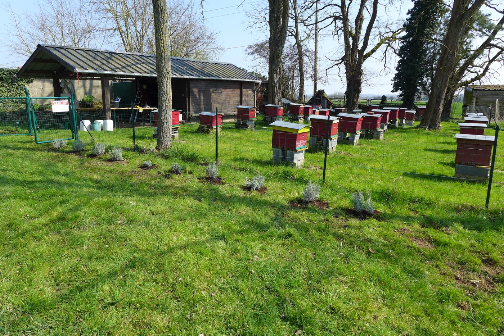
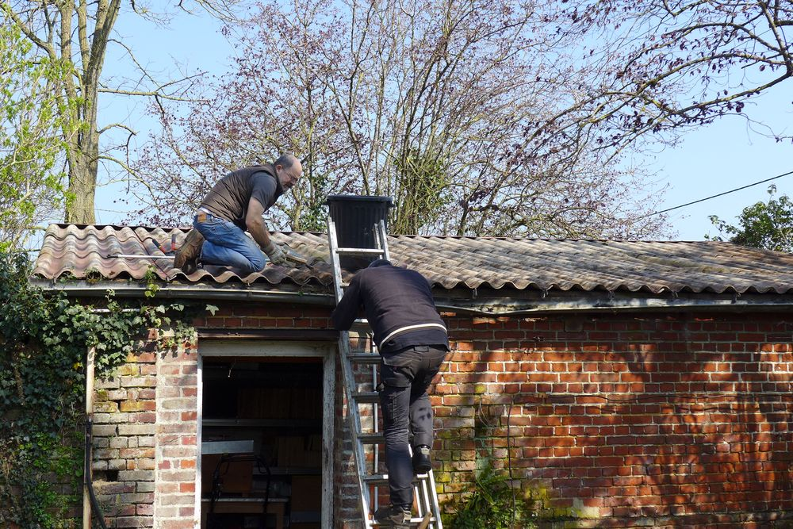
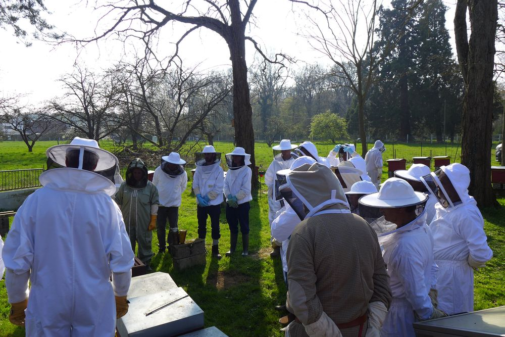
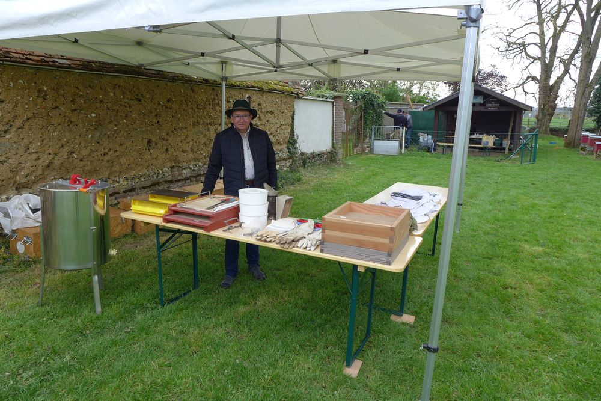
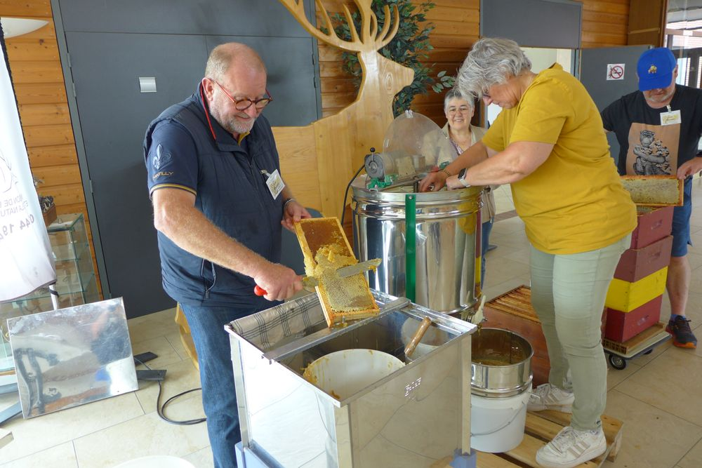
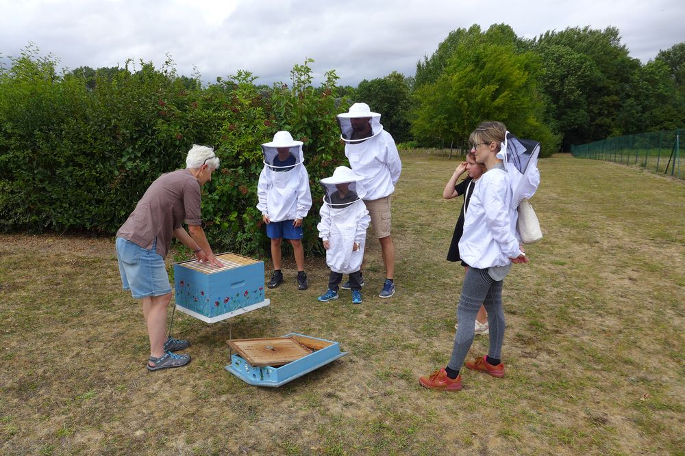
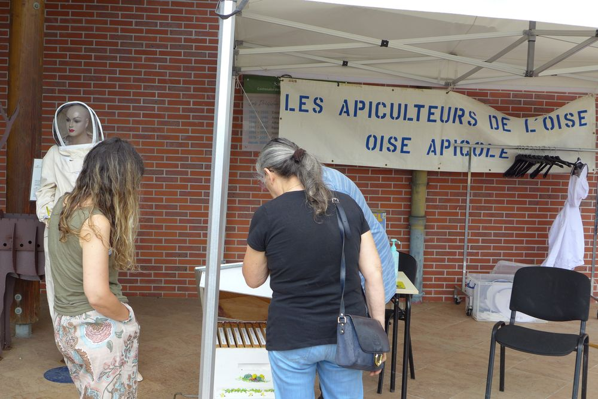
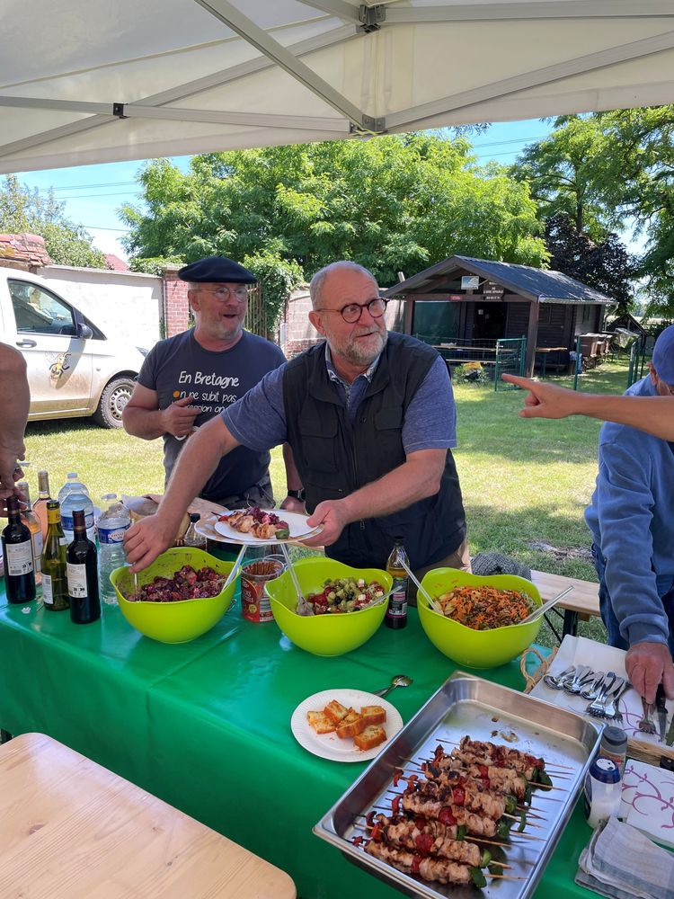
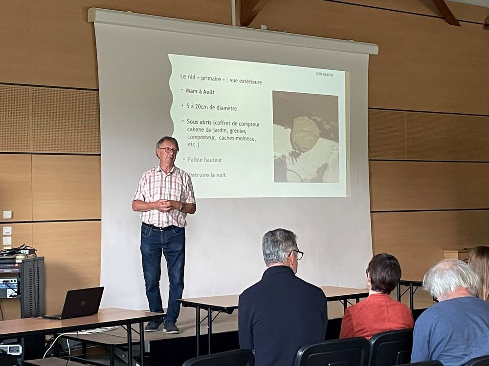
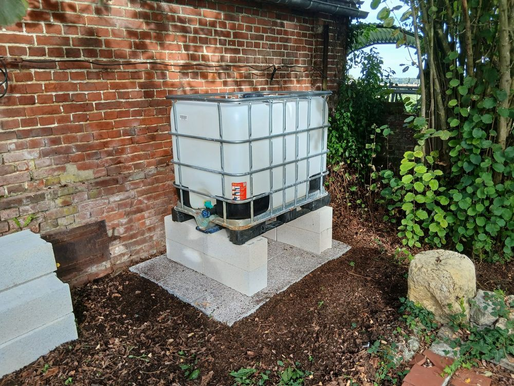

Accueil / L'association
L'association
Une association d'apiculteurs passionnés, qui travaille avec le GDSA 60 et les acteurs de la filière apicole régionale.
Pourquoi une association ?
- Être accompagné dans son activité : formations, visites d'exploitations, appui technique, commandes groupées.
- Partager et s'entraider grâce aux bénévoles, aux réunions, au site et aux lettres d'information.
- Dialoguer avec la filière apicole régionale, les groupements de défense sanitaire, les centres de formation et de recherche.
Les colonies du rucher école de Beauvais sont logées dans des ruches offertes par le Rotary International (clubs de Senlis, Crépy-en-Valois et Claye-Souilly), qui a remis 23 ruches à l'association. Un second rucher est installé à la Maison de la Chasse et de la Nature d'Agnetz.

Le bureau
À la suite de l'assemblée générale du 15 février 2026, le conseil d'administration a constitué son bureau le 19 février 2026.
- PrésidentMarc Vallée — oiseapicolepresident@gmail.com
- Vice-présidentThierry Lardier, également président du GDSA 60
- TrésorierPatrick Rouillé — tresorierOA@outlook.fr
- SecrétaireHenri Rabotin — secretariatoiseapicole@gmail.com
- Secrétaire adjointThierry Beaussé
Autres membres du bureau : Richard Bajo, Thierry Berthaud (juridique), Yvon Legros, Frédéric Pluchard (balances connectées), Sébastien Vetillard.
Ce que l'association propose
Centrale d'achats
Tout le matériel apicole, les produits sanitaires, candis et sirops à tarifs négociés. Le bon de commande est envoyé aux adhérents ; les commandes sont retirées lors de l'AG de printemps, de la journée de juin et de la journée de nourrissement de septembre.
L'association peut aussi mettre en relation avec des adhérents pour réserver des essaims.
Agri-Api Ruches
Un service de mise en relation entre agriculteurs (conventionnels et bio) souhaitant accueillir des ruches et apiculteurs adhérents depuis plus de deux ans, formés par l'association. Convention signée en 2017 avec la Chambre d'agriculture de l'Oise, la FNSEA et les forestiers.
Demande auprès du secrétariat.
Balances connectées
Des ruches équipées de balances connectées suivent l'évolution des miellées et de l'état des colonies, au service de tous les adhérents.
Le miel des adhérents
Une carte des apiculteurs adhérents permettra de trouver un miel produit près de chez soi, avec l'accord de chacun.
La vie de l'association en 2026








